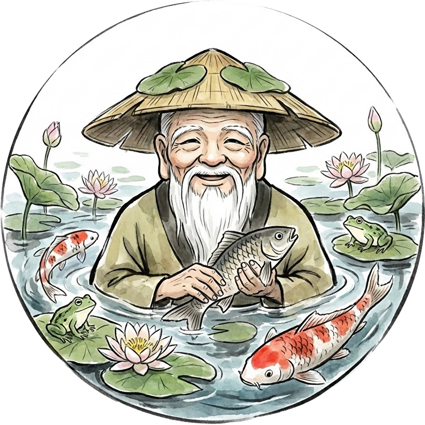
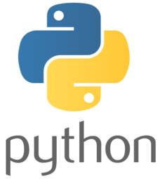
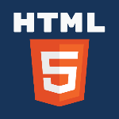
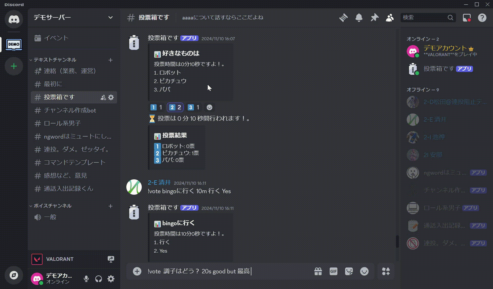

2024 6月
Hack U 大阪公大高専2024(LINEヤフー様開催)参加
Discordbotとそれらを共有するサイトを開発
主な機能(Discordbot)：Discordの通話通知、チャンネル作成など
主な機能(webサイト)：Discordbotの投稿、ログインなど

まずは将来の夢から、ズバリ ゲームクリエイターです！
小学生ぐらいからぼんやりとゲームを作りたいなぁ
と思い続けて、気づけば高専に入学していましたね。
自分の目標を達成するために現在勉強中です！
最近(2025年8月)では初めて自分の作品を公開したり、着実に夢に近づいている気がします。
Discordbotとそれらを共有するサイトを開発
主な機能(Discordbot)：Discordの通話通知、チャンネル作成など
主な機能(webサイト)：Discordbotの投稿、ログインなど
pythonでプロジェクト管理ができるアプリを作成
オリジナル機能:自由な内容を入力、①のような数字をボタンで呼び出し
オリジナルゲーム minesweeper&battleで参加
pythonで開発、pygameというライブラリを使用。
マインスイーパーとターン制コマンドバトルを組み合わせたゲーム
こだわり:2つの要素を上手く組み合わせるように工夫した
reactやtsを使用して開発したtodoアプリ
オリジナル機能：タスクに対するメモ機能、タスクを細分化する子分機能
Unityを使用して開発しポーカーゲーム
こだわり:一部、ポーカーのルールやゲームの流れを変更し多くの人がプレイしやすいようにした
学校を基にしたRobloxゲームを開発
開発は2025年9月頃ですが発表は2026年1月
体育館でボールを弾き飛ばし続けるゲーム
こだわり：プレイヤーの誘導がで切るように工夫したこと、隠し要素を実装したこと
Next.jsやSupabaseなどを使用した記事投稿サイト
オリジナル機能：記事の要約、目安箱による意見の送信機能、成果物URLなど
pythonで開発、pygameというライブラリを使用。
β版は完成、完成版は誠意作成中
こだわり：物理演算を自分で実装、時間＝通貨という設定

一番最初に習得したプログラミング言語です。
触れてきた時間も一番多いです。
いくつかゲームも作ったことがあります。
まだまだ勉強中ですが、ほぼ使いこなせています。
2025年春では新しく機械学習について勉強しました。

始めた当初はこのポートフォリオのために始めましたが
いろんなアニメーションなどを実装してみたり、ほかの
Webサイトを作ってみたりと上達してきています。
まだまだ勉強中ですが、ほぼ使いこなせています。
これからも学んでいきます。
主に制作物をリポジトリにして管理しています。
また、リポジトリを管理するのみではなく、ブランチや
イシューなどのグループ開発に関する知識も増えました。
まだまだ勉強中ですが、ほぼ使いこなせています。
近頃はリポジトリも増えてきています。
まず上の4つ目の✦は0. 5という意味です。
星で半分だけ塗りつぶしたものがなかったので
✦で代用しました。
2025年の夏休みから勉強し始めて、同年の
高専祭ではunityを使用してポーカーを
作成しました。
現在では1つのプロジェクトを完成させる
ことができる程度の知識はありますし、複数の
プロジェクトを結合することもできるようになりました。
これから頑張って学習したいと考えています。

2025年の10月頃から勉強し始めて、下で紹介している
todoアプリやブログアプリの作成で使用しました。
todoアプリやブログアプリを作成できるぐらいの知識はありますが
まだまだ勉強し始めたばかりなので
これからも頑張って学習したいと考えています。
2025年の10月頃から勉強し始めて、以下で紹介している
ブログアプリなどの作成に使用しました。
アプリ制作に使用したこともありそこそこの知識はありますが
歴が浅いのでまだまだ
これからも頑張って学習したいと考えています。

自主的に何かを作成するときはVScodeを利用しています。
仮想環境の構築、ファイルを分割したプログラムなど
VScodeを利用した開発ができます。
VScodeを利用して開発することも多く経験して
だいぶ成長できた気がします。
最近は動物が駆け回る拡張機能を入れて癒されてます。
pytonの次に学習しているプログラミング言語です。
繰り返しや条件分岐などの基本構文やライブラリの
インストール、ファイルの入出力などはできます。
基本的なことはできるのですがまだ学習時間や経験
が少ないのでもっと勉強を続けていきます。
まずluau言語とはlua言語をベースに制作されたプログラミング言語で、ロブロックススタジオに特化したものです。
ここでは、ロブロックススタジオに特化しているのでロブロックススタジオと並べて書きます。
まず、ロブロックススタジオは2025年の6月から勉強し始めて、今まで1つのプロジェクトを作成しました。
プロジェクトを完成させる程度の知識に加えて、プレース間の移動などもできるようになりました。
つぎにluau言語ですが、これもプロジェクトを完成させる程度の知識を会得しています。
C#はUnityで使用するので学習を始めました。
基本的な構文はできますが、まだまだ勉強中ですし
使っている時間も少ないのでこれからもっと学習
していきます。

2025年の12月頃からブログアプリの作成において使い始めました。
両方とも1つのプロジェクトで使用したので基本的な機能は習得しています。
vercelはただデプロイするだけではなくgithubリポジトリと同期し、
リポジトリの更新と連動することも習得しました。
supabaseにおいても中間テーブルの作成や権限付与、管理者の追加なども学びました。
いろいろ学びましたが使っている時間は少ないのでこれからもっと学習
していきます。
2025年10月頃から勉強し始めました。
wslとdockerを使用してコンテナ化したサーバーを構築することができるようになりました。
また、webサーバーのコンテナのDBコンテナの2コンテナ構成もできるようになりました。
いろいろ学びましたが使っている時間は少ないのでこれからもっと学習
していきます。
制作期間は2025年 3月~2026年 3月です。
かなりの期間開発しているように見えますが、間に多くのプロジェクトの開発をしていたので実際は3か月ぐらいだと思います。
この作品は「unity」などのゲームエンジンを使用していません。 なので物理演算を自分で実装しました、いろいろ調べて頑張って実装したので
かなり頑張ったポイントです。 また、時間を通貨として使うというアイデアによって独特なゲーム体験を作ることができたと思います。
このゲームのイラストは全て自分でデザインしたのでその点も頑張ったポイントです。
2026年3月やっと完成しました。うれしい!
まだ、提出していませんがみんなのゲームパレードに提出する予定です。
制作期間は2024年 12月~2025年 6月です。
今までは既存のターン制バトルを真似たもの
を作ってきましたが今回はオリジナルっぽいものを
作ってみたかったのでマインスイーパーと
ターン制バトルを掛け合わせたものを作りました。
こういった何かと何かを掛け合わせてゲームを作る経験は
初めてだったので戸惑いましたが、マインスイーパーの結果を
バトルの攻撃力や防御力に反映したり、バトルで
使用したらマインスイーパーが有利になる道具を
実装することによって上手く二つの要素を
掛け合わせることができたと思います。
2025年1月には一旦完成としていたのですが
タイトルやチュートリアル、BGMなどの要素を追加し、
ちゃんとしたゲーム作品として2025年7月にインターネット
に公開しました。
制作期間は2025年 9月~11月です。
まず、このポーカーゲームは2025年の高専祭でのカジノを作成するプロジェクトの一部として作成しました。
プロジェクトで私はポーカー作成を担当していました。
はじめてunityを使用して作成した作品で、アニメーション機能などを使用してみました。
高専祭での作品だったので手軽に遊べるようにルールや手順を簡略化したり、
今回は1台のデバイスで複数人がプレイするため人の手札などが見えてしまわないように
都度確認画面を入れたりして、プレイに不自由がないように工夫しました。
公開がgoogledriveになっていますが2026年1月現在よりよい公開方法を模索しています。 もう少し時間をください
制作期間は2025年 11月~2026年2月です。
通常のブログアプリに必要な記事の閲覧や編集、新規作成といった機能に加えて
オリジナル機能として要約と目安箱、成果物URLなどを実装しました。
まず要約機能は記事の本文を読まなくても内容理解することができる
機能で、要約は記事の作者が任意に設定します。
私自身記事が長くて途中で読むのをやめてしまうという経験があったので
私のような人でも記事の内容を大まかに知ることができるようにしました。
要約は長くなりすぎないように150文字以内としました。
また、要約は記事への導入も兼ねることができます。
目安箱は記事の改善を効果的にするために実装しました。
この機能はサイトに関する意見や感想などをサイトに送ることができる機能です。
ユーザーの意見を取りいれることで私一人で考えるよりも効果的な改善案
が生まれると思ったので実装しました。
成果物URLはアプリの公開URLやリポジトリのURLなどを表示できる
技術的な記事向けの機能です。
このようなURLは文中に示せばいいといえばいいのですが
こちらで指定することで記事の本文に埋もれないようにしたり
クリックで遷移することができるようにしました。
制作期間は2025年 10月~11月です。
主に自分が使用する目的で作成したので、自分が欲しいと
思った機能を全て実装しました。
タスクにメモを残せるようにしたり細分化したタスクを追加できるようにしました。
特に細分化はこだわりポイントで、
タスクを細分化し、小さな成功を積み重ねるようにしてモチベーションを維持できるように工夫しました。
またタスクを達成するごとに経験値を入手できるようにして、レベルがどんどん上がっていくようにしました。
これによってユーザーのモチベーションを維持することが
できると考えました、実際に私のモチベーションを上げることができました。

制作期間は2024年 6月~2025 1月です。
Discordbotとそれらを共有するサイトを開発するというチームプロジェクトでDiscordbotの作成を担当しました。
DiscordbotというDiscordの拡張機能の様なものを作成できる機能を用いて
様々なbotを作成しました。 主な機能としてチャンネルの作成やアンケート、通話の入退出の通知、
などがあります。
botを用いてDisocrdを使用している時に不便だなと思った点を解決するようにしました。
制作期間は2025年 8月です。
unityを勉強し始めていたのと、canvaを使ってみたいという
気持ちがあったのでcanvaのスライドショーでunityを紹介しました。
canvaについてはスライドのデザインテンプレートを使用したり、
画像素材の管理、要素のグループ化などcanva特有の機能を使用できたと思います。
スライドショーのみで完結する形にしたので文字数は多くなってしまいましたが
unityの魅力を十分に伝えられたかと思います。
unityについては自分が使ってみてすごく便利だと思った機能をメインに、
unityがどんなに使われているかを紹介しています。
これを作成して改めてunityのすごさが分かりました。
制作期間は2025年 9月です。
ロブロックスで公大高専を題材にした場所(体育館や教室など)でそれぞれゲームを作る
というチームプロジェクトで作成しました。 私は体育館を担当していたので、体育館でボールを使用するゲームを作成することにしました。
ゲームの内容は浮かんでいるボールを弾き続けるというシンプルなものですが、体育館に配置したキャラのセリフや
隠し要素などこだわれるところはこだわりました。
特にダッシュやボールの弾き方など、ゲームの説明をホワイトボードに書くことによって
自然と体育館という場所に落とし込んだのはこだわりポイントです。
調べたのですがrobroxの動画や配信に関する利用規約が確認できなかったため紹介動画はありません。
使用技術:HTML,CSS,Vscode
制作期間は2025年 7月です。
JavaScriptはまだ学習していなかったので、予習として作成しました。
自分で調べながら基本構文などの技術面や
活用されているものなどの知識面など、複数の視点から
JavaScriptについて知ることができたので良い経験になりました。
このWebサイトにはHTML及びCSSを使用しています。
制作期間は2025年 2月で12時間ほどで制作しました。 制作した理由はいままで自分が何かを制作するときに 使っていたメモ帳アプリで不便だと感じていた部分を 解消しようと思い、今回のアプリを製作しました。 具体的にはカテゴリーごとの管理が従来のアプリでは やりにくいと感じていました。 例えば、 機能の追加では○○をする、 バグの修正では△△をしたい、 というときに従来のアプリではスペースで区切ったり、 文字の大きさを変えて箇条書きにするしかなかったと 思うのですが、今回制作したアプリでは上の画像の通り、 「|」や「―」のような図形で表すことにより、 視覚的にわかりやすくすることができたと思います。 また、「☑」を使うことによってその作業が 終わっているかどうかを表すこともできます。